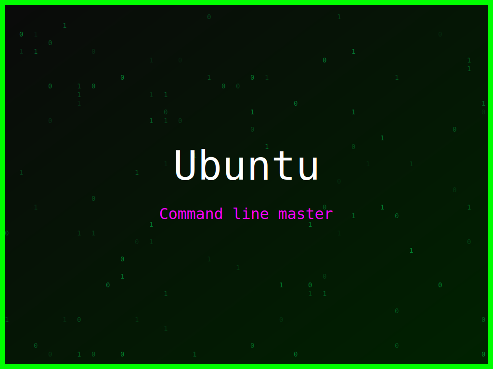

<section class="post-content">


    <div class="details-container">
       
        
        <ul class="details-list">
            <li><strong>Autor:</strong> piolinux</li>
            <li><strong>Descrição:</strong> Arte digital Ubuntu que evoca a sinergia entre código, compilação e comunidade.</li>
            <li><strong>Distro:</strong> Ubuntu</li>
            <li><strong>Frases:</strong> Command line master, Compilar é poder, Open Source rocks</li>
            <li><strong>Tags:</strong> matrix, colorido</li>
        </ul>
        <a href="../galeria.html">Voltar para a galeria</a>||
        <a href="../wallpaper9.svg" download="wallpaper-ubuntu-sinergia-de-codigos.svg">Baixar Wallpaper</a>
    </div>

</section>
